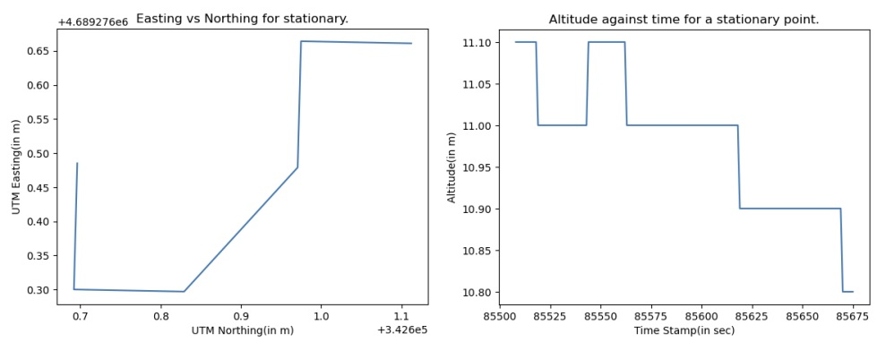
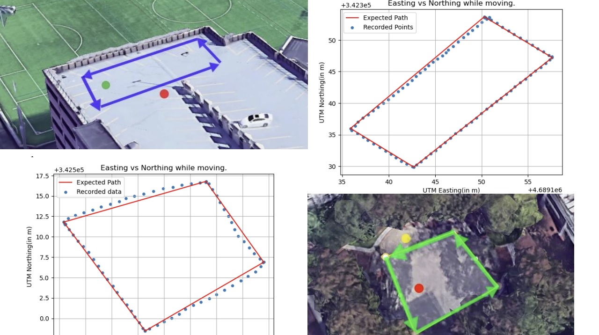
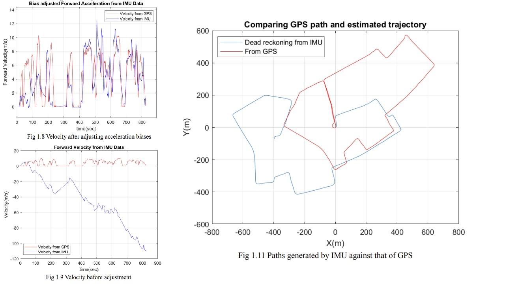
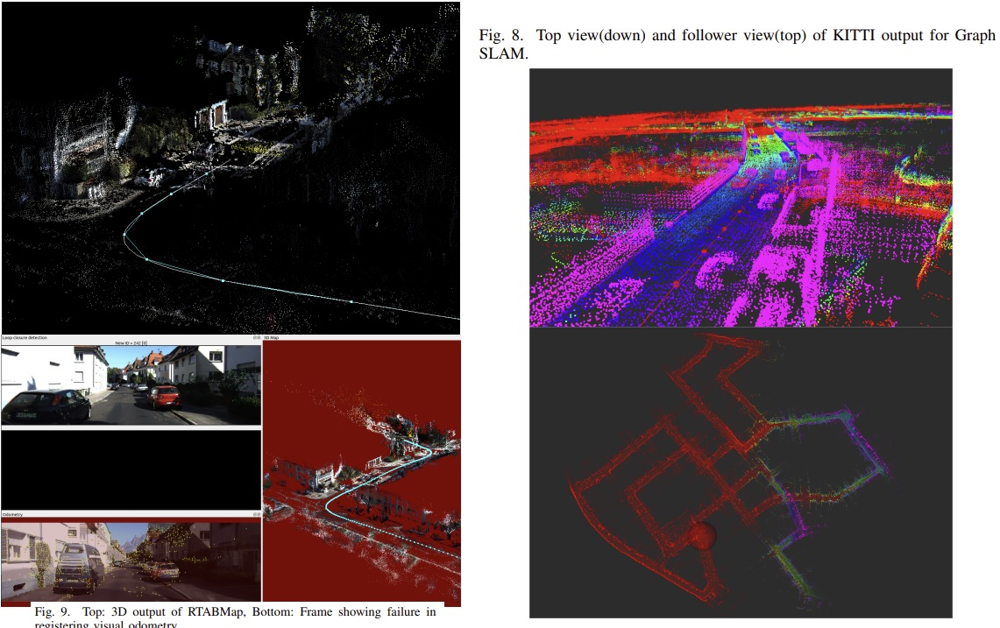

Sensor Analysis and SLAM
Overview
Sub-projects
-
Global Positioning System (GPS) Error Analysis Code and Report
A driver was coded to parse the output from the GPS puck and convert it into meaningful messages, which were then labeled and stored in ROSbags for later replay. These ROSbags were subsequently converted into CSV files for analysis with Python and Matlab scripts. The focus of this experiment was placed on evaluating the validity of GPS entries in urban and vegetation-blocked areas, as well as examining the lack of reliability of GPS values in the absence of certain filters or corrective elements.
 -
Real Time Kinematic (RTK) positioning Code and Report
We utilize two previously analyzed GPS pucks along with Arduisimple- (simpleRTK2B) boards and (Telemetry radio V3) modules to implement RTK positioning based GPS. Stationary and moving GPS data were collected, and the accuracy and reliability of the results were compared. In the open space, centimeter-level accuracy was achieved, significantly improving upon previous results by utilizing RTK corrections. However, in the occluded environment with obstructions like trees and people, some deviations were observed due to multipathing effects. Nevertheless, sub-meter accuracy was still demonstrated by the data, highlighting the effectiveness of RTK GPS in overcoming environmental challenges. These findings underscore the importance of site selection for optimal GPS data quality and emphasize the superiority of RTK GPS over standard GPS equipment in achieving highly precise positional data.
 -
Allan Variance analysis of Inertial Measurement Units (IMU)s Code and Report
Two datasets of 5 minutes and 5 hours were collected using an inertial measurement unit (IMU). Allan variance and deviation analysis were conducted on the collected datasets, and noise parameters were calculated. The time series and frequency plots of the data were also generated and analyzed. The Allan variance method was employed to represent the root mean square random drift error as a function of average time, providing insights into the underlying random processes contributing to data noise. The datasets were collected using a VN-100 IMU unit, and a ROS driver was used for data acquisition. The analysis revealed noise parameters slightly higher than those specified in the datasheet, and the errors in the sensor measurements were found to have Gaussian distributions. Various noise factors affecting the IMU data were explored, and recommendations for improving data quality, such as periodic calibrations and stable placement, were discussed.
-
Dead Reckoning with IMUs and GPS data Code and Report
Datasets were collected from a moving vehicle using an inertial measurement unit (IMU) and a Global Positioning System (GPS) puck. The data was used to calibrate magnetometer readings, derive forward velocity plots, and generate a dead reckoning of the vehicle's path based on the IMU data. The magnetometer calibration addressed hard and soft iron errors by shifting and transforming the data. Linear accelerations were integrated to obtain velocity, and angular velocities were integrated to calculate angles. A complementary filter was employed to fuse gyroscope and magnetometer data for improved yaw accuracy. Forward velocities were determined by integrating acceleration, and bias removal techniques were applied. Dead reckoning was used to estimate the vehicle's trajectory and compared to GPS data, revealing accumulated errors in the IMU-based path estimation. The findings suggest that while IMU data can provide useful insights, challenges related to biases and noise must be carefully addressed to improve accuracy in dead reckoning applications.
 -
VSLAM and SLAM comparison with Road Sign Mapping added Code and Report
